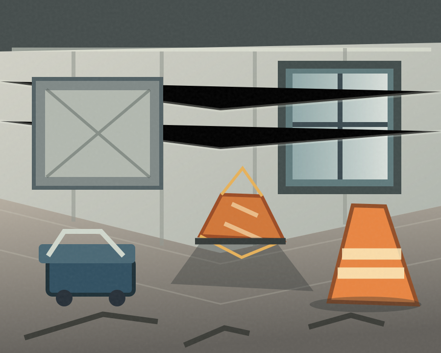

폐업철거부터
상가 원상복구까지
상담하세요.
폐업철거플랜은 폐업·임대차 종료로 점포를 정리하는 사업자의 무료 상담 문의를 접수합니다. 철거 범위와 상가 원상복구 조건을 확인한 뒤 제휴 시공업체가 견적·계약·시공을 진행합니다.
상담 무료 · 필요시 방문 견적 무료 · 철거·원상복구 공사는 별도 비용

폐업철거와 원상복구,
어디까지 진행해야 할까요?
같은 점포라도 임대차 조건, 업종 설비, 철거 범위에 따라 작업 내용과 견적이 달라집니다.
업종이 다르면 철거 범위도 다릅니다.
주방 설비가 있는 식당과 급배수·카운터 시설이 중심인 카페는 확인 사항부터 다릅니다.
업종 특성에 맞춘 확인 사항을 제공하며 실제 공사 가능 여부는 현장 조건에 따라 달라집니다. 업종별 안내 전체 보기 ↗
어느 지역에서
점포철거가 필요하신가요?
지역별로 점포 유형과 건물 관리·반출 조건이 다릅니다. 서울 주요 상권의 상담 준비사항을 먼저 정리했습니다.
강남구
역삼·논현·신사
업무용 빌딩의 공사 시간과 설비 분리
철거·원상복구 확인하기서울 · 마포구마포구
서교·합정·연남
골목 반출 동선과 카페·식당 설비
철거·원상복구 확인하기서울 · 송파구송파구
잠실·문정·가락
복합시설의 작업 승인과 업종별 반환 범위
철거·원상복구 확인하기서울 · 영등포구영등포구
여의도·문래·영등포역
사무실 원상복구와 상가 철거 범위 구분
철거·원상복구 확인하기서울 · 성동구성동구
성수·서울숲·왕십리
맞춤 인테리어·노출 설비의 철거 및 마감
철거·원상복구 확인하기상담 후 점포 주소와 공사 범위를 확인하여 방문 견적 가능 여부 및 일정을 안내합니다.
다른 지역 철거 안내 보기 ↗점포철거비 지원,
다음 공고에 대비할 수 있도록.
희망리턴패키지 점포철거비 지원의 2026년 신청은 마감되었습니다. 지금 공사를 진행한다면 관련 서류를 보관하고, 차기 공고가 나오면 신청 자격과 과거 공사비 인정 여부를 새로 확인해야 합니다.
지원금 준비사항 자세히 보기 ↗공사 전후에 챙길 자료
- 임대차계약 및 폐업 관련 서류
- 공사 전후 현장 사진
- 공사내역과 비용 증빙
- 차기 공고의 인정 기간·신청 요건
2027년 시행 여부·지원 요건·소급 인정은 확정되지 않았습니다. 지원금 지급을 보장하지 않습니다.
상담 전 많이 묻는 질문
상담을 받기 전, 무엇부터 확인해야 하는지 정리했습니다.
상담과 방문 견적은 무료인가요?
상담과 필요한 경우 진행하는 현장 방문 견적은 무료입니다. 실제 철거·원상복구 공사는 견적 합의와 별도 계약에 따른 비용이 발생합니다.
원상복구는 무조건 처음 상태로 전부 철거해야 하나요?
임대차계약의 원상복구 조항, 최초 인수 상태, 임대인과 협의한 범위에 따라 달라질 수 있습니다. 공사 전 계약서와 인수 당시 자료를 확인하는 것이 좋습니다.
폐업이 아니라 인테리어 변경 목적이어도 가능한가요?
주요 상담 대상은 폐업에 따른 점포철거·원상복구입니다. 단순 인테리어 변경이나 부분 철거는 서비스 제공이 어려울 수 있습니다.
지금 철거하면 내년에 지원금을 받을 수 있나요?
2026년에는 이미 철거한 사람에 관한 절차가 있었지만, 2027년에도 동일하게 인정된다는 보장은 없습니다. 차기 공고가 나온 뒤 폐업일·공사일·증빙 요건을 확인해야 합니다.
철거 일정이 정해졌다면,
먼저 상담부터 시작하세요.
점포 위치와 업종, 예상 면적을 남겨주시면 제휴 철거업체의 상담으로 연결됩니다.